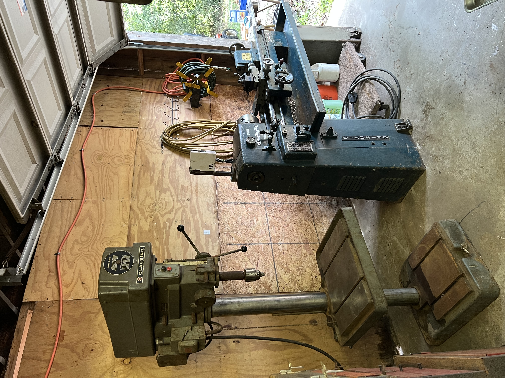
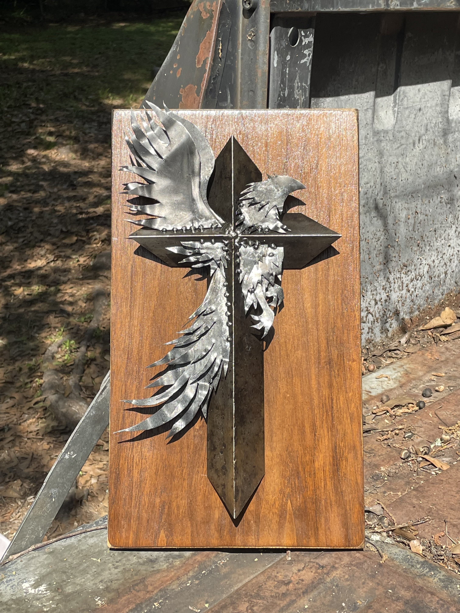

Utility Vehicle Build
A handmade utility vehicle designed and built entirely out of scrap iron. It features a custom transmission, dumping bed, work lights, throttle, clutch and brake pedals, and much more.
Explore ProjectPhysics Student | Machinist | Mechanical Design & Fabrication
A collection of mechanical builds, engineering design, machine restorations, and creative work. These projects reflect my interests in hands-on problem-solving, machining, fabrication, and design.
A handmade utility vehicle designed and built entirely out of scrap iron. It features a custom transmission, dumping bed, work lights, throttle, clutch and brake pedals, and much more.
Explore Project
A screw-driven fixture designed and fabricated for adjustable magnet separation in physics experiments.
Explore Project
A collection of machine and hand-tool restorations, blacksmith-work, and other mechanical hobby projects.
Explore Restorations & Hobby Projects
Selected creative work demonstrating craftsmanship, attention to detail, and visual design.
Explore Artwork